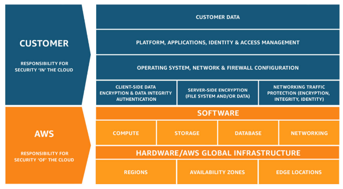
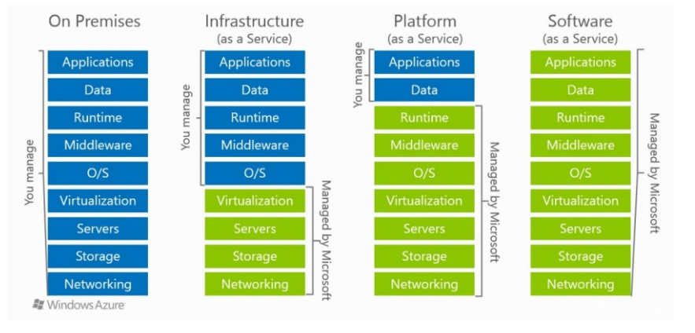

[comment]: # (mdslides presentation.md --include media) [comment]: # (The list of themes is at https://revealjs.com/themes/) [comment]: # (The list of code themes is at https://highlightjs.org/) [comment]: # (markdown: { smartypants: true }) <style type="text/css"> .reveal { font-size: 2.2em; } .reveal .code-wrapper code { white-space: pre; font-size: 2em; line-height: 1.2em; } </style> Microservices23 # Introduction to Cloud Computing By Alon Itach
### Today's agenda - On-premise vs Cloud environments - Amazon Web Services introduction - Regions and Availability zones - AWS shared responsibility model - Compliance - Different service models - IaaS, PaaS, SaaS
### Overview of Cloud Computing - [Amazon Web Services (AWS) provides a highly reliable, scalable, and low-cost infrastructure platform](https://docs.aws.amazon.com/whitepapers/latest/aws-overview/aws-overview.pdf?did=wp_card&trk=wp_card) - Pay-as-you-go pricing model - No need to make large up-front investments in hardware and spend a lot of time managing that hardware - More than 200 services
### Overview of Cloud Computing While each organization experiences a unique journey to the cloud with numerous benefits, six advantages become apparent time and time again 
### Global Infrastructure - AWS provides a highly available technology infrastructure platform with multiple locations worldwide. - These locations are composed of **Regions** and **Availability Zones**. - Each region has multiple, isolated locations known as Availability Zones. - Each AZ is also isolated, but the AZs in a region are: - Physically separated within a typical metropolitan region - Located in lower-risk flood plains - Connected through low-latency links - On-site backup generators - Fed via different grids from independent utilities (when available) - By placing resources in separate AZ, your service is protected from a disruption impacting a single location
### AWS the Shared Responsibility Model - Cloud security at AWS is the number one priority. - Built-in security architecture for visibility, auditability, controllability, and agility. - AWS are responsible for the security **of** the cloud, while allow to secure anything you deploy **in** the cloud. This called the [Shared Responsibility Model](https://aws.amazon.com/compliance/shared-responsibility-model/). 
### Compliance - Organizations retain complete control and ownership over the region in which their data is physically located, allowing them to meet regional compliance and data residency requirements. - https://aws.amazon.com/compliance/programs/ 
### Service Models - Infrastructure as a Service (IaaS) - Platform as a Service (PaaS) - Software as a Service (SaaS) 
### Deployment Models - Cloud-based application - On-premises applications - A hybrid deployment is a way to connect infrastructure and applications between cloud-based resources and existing resources that are not located in the cloud. 
### Accessing the Platform - [AWS Management Console](https://signin.aws.amazon.com/signin) - a simple and intuitive user interface. - [AWS Command Line Interface (CLI)](https://docs.aws.amazon.com/cli/latest/userguide/getting-started-install.html) - a unified tool to manage your AWS services from the terminal. - [Software Development Kits (SDKs)](https://aws.amazon.com/sdk-for-python/) - using AWS services in your applications tailored to your programming language or platform.
### Elastic Cloud Compute (EC2) overview - Reliable, secure, and almost infinite compute capability - Preconfigured templates for your instances, known as Amazon Machine Images (**AMI**s), that package the bits you need for your server (Linux and Windows) - Various configurations of CPU, memory, storage, and networking capacity for your instances, known as **instance types** - Persistent storage volumes for your data using Amazon Elastic Block Store (Amazon EBS), known as **Amazon EBS** volumes - A firewall that enables you to specify the protocols, ports, and source IP ranges that can reach your instances using **security groups** - Natively integrated with most of the AWS services - Pay-as-you-go [pricing model](https://aws.amazon.com/ec2/pricing/on-demand/)
### EC2 Storage Amazon EC2 provides you with flexible and easy-to-use data storage options for your instances. - **Amazon EBS** provides durable, block-level storage volumes that you can attach to a running instance. - **Amazon EFS** provides [scalable file storage](https://docs.aws.amazon.com/AWSEC2/latest/UserGuide/AmazonEFS.html) for use with Amazon EC2.
### Virtual Private Cloud (VPC) overview - With Amazon Virtual Private Cloud (Amazon VPC), you can launch AWS resources in a logically isolated virtual network that you've defined. - Virtual Private Cloud (VPC) is the networking layer for EC2 (and related compute services) - Very similar to traditional network that you'd operate on prem. - Complete control over how you want to configure the networking - Custom IP address ranges - NAT/Internet gateways - Firewall, Network Access Control Lists (ACLs) - Multiple public/private subnets - Routing tables - DHCP - Your AWS account includes a [default VPC](https://docs.aws.amazon.com/vpc/latest/userguide/default-vpc.html) in each AWS Region. Your default VPCs are configured such that you can immediately start launching and connecting to EC2 instances. - There's no additional charge for using a VPC. There are charges for [some VPC components](http://aws.amazon.com/vpc/pricing/), such as NAT gateways.
### Example The following diagram shows an example VPC. The VPC has one subnet in each of the Availability Zones in the Region, EC2 instances in each subnet, and an internet gateway to allow communication between the resources in your VPC and the internet. 
# Thanks